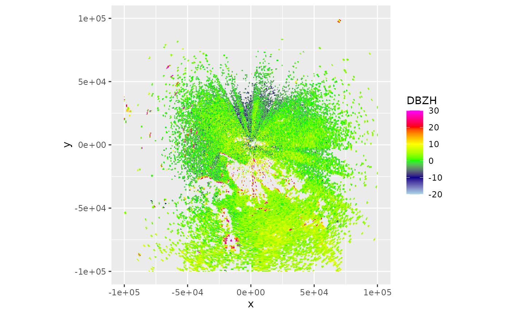

Correction for range effects
Adriaan M. Dokter
Source:vignettes/range_correction.Rmd
range_correction.Rmd1 Preparations
Load bioRad
## Welcome to bioRad version 0.10.0.9000## using vol2birdR version 1.1.0 (MistNet not installed)2 Beam propagation
We start with the changing properties of the radar beam as it propagates through the atmosphere. We define:
- range: the length of the skywave path between target and the radar antenna, also known as slant range
- distance: the distance of the target from the radar as measured along the earth’s surface, also known as down range.
The beam height is changing as a result of earth’s curvature, and beam refraction:
# define a range grid from 0 to 200 km:
my_range <- seq(0, 200000, 1000)
# plot the beam height for each range, for a 0.5 degree elevation beam:
plot(my_range, beam_height(my_range, elev = .5), xlab = "range [m]", ylab = "beam height [m]")
The beam width also broadens with range:
# plot the beam width, for a beam opening angle of 1 degree (typical for most weather radars):
plot(my_range, beam_width(my_range, beam_angle = 1), xlab = "range [m]", ylab = "beam width [m]")
We can now combine the relations for beam width and beam height, to calculate the beam profile as a function of height, i.e. the altitudinal normalized distribution of radiated energy by the beam. Let’s plot the radiation profile for a 0.5 and 2 degree beam elevation at 50 km from the radar (the height axis runs from ground level straight up):
# plot the beam profile, for a 0.5 degree elevation beam at 50 km distance from the radar:
plot(beam_profile(height = 0:4000, 50000, 0.5), 0:4000, xlab = "normalized radiated energy", ylab = "height [m]", main = "beam elevation: 0.5 deg, distance=50km")
# plot the beam profile, for a 2 degree elevation beam at 50 km distance from the radar:
plot(beam_profile(height = 0:4000, 50000, 2), 0:4000, xlab = "normalized radiated energy", ylab = "height [m]", main = "beam elevation: 2 deg, distance=50km")
We can also calculate the normalized radiation profile for the two beams combined:
# plot the combined beam profile for a 0.5 and 2.0 degree elevation beam at 50 km distance from the radar:
plot(beam_profile(height = 0:4000, 50000, c(0.5, 2)), 0:4000, xlab = "normalized radiated energy", ylab = "height [m]", main = "beam elevations: 0.5,2 deg, distance=50km")
3 Vertical profiles and polar volumes
Let us now assume we have calculated a vertical profile (of birds) for a certain polar volume file. Let’s load an example
# let's load an example polar volume:
pvolfile <- system.file("extdata", "volume.h5", package = "bioRad")
example_pvol <- read_pvolfile(file = pvolfile)
# a vertical profile can also be calculated from the polar volume directly, using
# calculate_vp(pvolfile)
# but for now we will use bioRad's example vertical profile already calculated:
example_vp## Vertical profile (class vp)
##
## radar: seang
## source: WMO:02606,RAD:SE50,PLC:Ängelholm,NOD:seang,ORG:82,CTY:643,CMT:Swedish radar
## nominal time: 2015-10-18 18:00:00
## generated by: vol2bird 0.3.17Let’s plot the vertical profile, for the quantity eta (the linear reflectivity):
plot(example_vp, quantity = "eta")
Note that eta is directly related to reflectivity factor (DBZH), i.e. a reflectivity factor of 5 dBZ amounts to the following eta at a radar wavelength of 5.3 cm:
dbz_to_eta(5, wavelength = 5.3)## [1] 1140.5884 Spatial estimates of vertically integrated density (VID)
Our goal is to estimate a spatial image of vertically integrated density (VID) based on all elevation scans of the radar, while accounting for the changing overlap between the radar beams as a function of range.
We start with:
- a polar volume, containing multiple scans
- a vertical profile (of birds) calculated for that polar volume
- a grid that we define relative to the earth’s surface, on which we
will calculate the range corrected image. The pixel locations on the
ground are easily translated into a corresponding azimuth and range of
the various scans (see function
beam_range()).
For each scan within the polar volume we:
- calculate for each ground surface pixel the vertical radiation profile at that pixel for that particular scan, following above paragraph 2.
- calculate the reflectivity we expect at that pixel (), given the vertical profile (of birds) and the part of the profile radiated by the beam. This is simply the average of (linear) eta in the profile (as plotted in paragraph 3 above), weighted by the vertical radiation profile (as plotted in paragraph 2).
- we also calculated the observed eta at this pixel, which is simply
given by
dbz_to_eta(DBZH)(see paragraph 3), with DBZH the reflectivity factor measured at the pixel’s distance from the radar.
For each pixel on the ground, we thus end up with a set of and a set of . From those we can calculate a correction factor at that pixel, as , with the sum running over scans.
To arrive at the final PPI image:
- we calculate the vertically integrated density (
vid) and vertically integrated reflectivity (vir) for the profile, using the functionintegrate_profile(). - the spatial range-corrected PPI for
VIDis simply the adjustment factor image (R), multiplied by thevidcalculated for the profile - Likewise, the spatial range-corrected PPI for
VIRis simply theRimage, multiplied by thevircalculated for the profile
5 Example: estimating a VID image
Let’s first make a PPI plot of the lowest uncorrected scan:
# extract the first scan from the polar volume:
my_scan <- example_pvol$scans[[1]]
# project it as a PPI on the ground:
my_ppi <- project_as_ppi(my_scan, range_max = 100000)
# plot it
plot(my_ppi)
Now let’s calculate the range-corrected PPI
# let's use a 500 metre spatial grid (res), and restrict to 100x100 km area
my_corrected_ppi <- integrate_to_ppi(example_pvol, example_vp, res = 500, xlim = c(-100000, 100000), ylim = c(-100000, 100000))
my_corrected_ppi## Plan position indicator (class ppi)
##
## parameters: VIR VID R overlap eta_sum eta_sum_expected
## dims: 400 x 400 pixelsThe range corrected PPI has four parameters: VIR, VID, R, overlap. Let’s plot the adjustment factor R:
# plot the adjustment factor R:
plot(my_corrected_ppi, param = "R")
Let’s also plot the vertically integrated reflectivity:
plot(my_corrected_ppi, param = "VIR")
Or plot the vertically integrated density on a map:
bm <- "osm"
if (all(sapply(c("ggspatial","prettymapr", "rosm"), requireNamespace, quietly = TRUE))){
map(my_corrected_ppi, map=bm, param = "VIR", alpha = .5)
}## Zoom: 7## Fetching 4 missing tiles## | | | 0% | |================== | 25% | |=================================== | 50% | |==================================================== | 75% | |======================================================================| 100%## ...complete!6 Overlap between radiation profile and bird profile
At large distances from the radar we expect correction for range effects to become more difficult:
- radar beams start to overshoot the aerial layers with biology, i.e. the overlap between the vertical profile and the emitted radiation profile decreases
- at large distances weak biological echoes may get below the radar’s detection level
We can calculate overlap between emitted radiation and the biological profile as follows:
# calculate overlap between vertical profile of birds
# and the vertical radiation profile emitted by the radar:
bpo <- beam_profile_overlap(example_vp, get_elevation_angles(example_pvol), seq(0, 100000, 1000), quantity = "eta")
# plot the calculated overlap:
plot(bpo)
The function first normalizes the vertical profile altitudinal
distribution. This can be either using profile quantity eta or dens,
whichever is preferred (note that dens, the density, is sometimes
thresholded to zero based on radial velocity standard deviation, see
sd_vvp_threshold(), while eta is not)
It then calculates the overlap between the normalized vertical
profile, and the normalized radiation profile as calculated with
beam_profile(), using a metric called the Bhattacharyya
distance. This metric is zero when there is no overlap, and 1 when
the distributions are identical.
The range-corrected PPI also contains a field overlap,
which contains the same metric but then calculated on the grid of the
PPI:
plot(my_corrected_ppi, param = "overlap")
The overlap metric might be used in the future to show only certain section of the PPI, based on their overlap value.
7 To do
- implementation of a
noise_floorparameter, by which one can determine at which distance birds are expected to be below noise level, given their vertical profile. Affects functionbeam_profile_overlap().